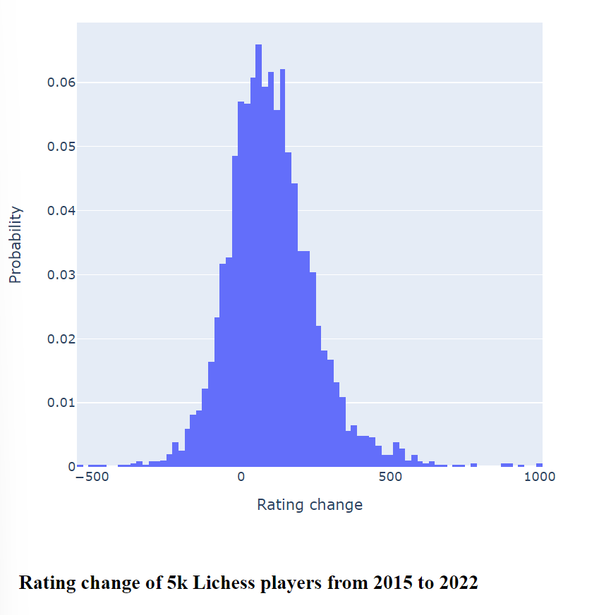
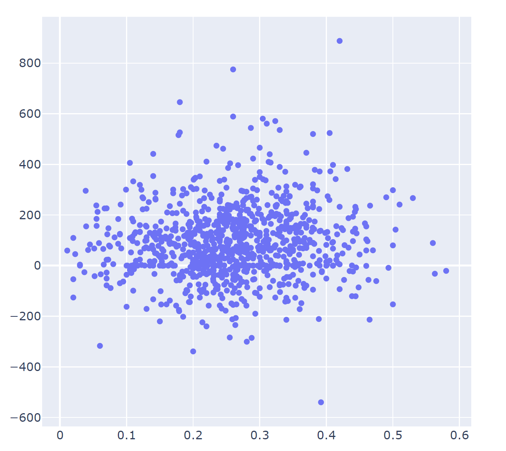

<html data-theme="light"></html>
<head>
    <meta name="viewport" content="width=device-width, initial-scale=1"></meta>
    <link rel="stylesheet" href="https://cdn.jsdelivr.net/npm/bulma@1.0.0/css/bulma.min.css"></link>
    <script src="https://kit.fontawesome.com/fd17b6d7c8.js" crossOrigin="anonymous"></script>
    <link rel="stylesheet" href="styles.css"></link>
    <link rel="preconnect" href="https://fonts.googleapis.com"></link>
    <link rel="preconnect" href="https://fonts.gstatic.com"></link>
    <link rel="stylesheet" href="https://fonts.googleapis.com/css2?family=Yrsa:ital,wght@0,300..700;1,300..700&display=swap"></link>
    <link rel="stylesheet" href="https://fonts.googleapis.com/css2?family=Merriweather:ital,wght@0,300;0,400;0,700;0,900;1,300;1,400;1,700;1,900&display=swap"></link>
    <script src="Script.js" type="module"></script>
    <script src="https://liteanalytics.com/lite.js" data-host="harrymccarney.com" defer async></script>
</head>
<body class="has-background-light has-text-dark" onLoad="execScripts()" style=" 
                    overflow-x:hidden; width:100%; 
                    --family-serif:'Yrsa', serif; 
                    --family-secondary-serif: 'Merriweather', serif;
                    --family-primary: var(--family-serif);
                    --family-secondary: var(--family-secondary-serif);
                    font-family: var(--family-primary);
                    font-family: var(--family-secondary)
                    ">
    <section class="container is-fluid">
        <nav class="navbar is-fluid has-text-dark has-background-light" role="navigation" aria-label="main navigation">
            <div class="navbar-brand">
                <a id="navbar-burger" class="navbar-burger is-text has-text-dark" role="button" aria-label="menu" data-target="navbarBasicExample">
                    <span aria-hidden></span>
                    <span aria-hidden></span>
                    <span aria-hidden></span>
                    <span aria-hidden></span>
                </a>
            </div>
            <div id="navbarBasicExample" class="navbar-menu navbar-end">
                <a class="navbar-item" href="about.html">About</a>
            </div>
        </nav>
        <section class="container content is-medium has-text-dark" style="max-width: 800">
            <nav class="level mt-6">
                <div class="level-left">
                    <div class="level-item">
                        <span class="icon is-medium is-primary">
                            <i class="fa-regular fa-circle is-primary" style="color:#00d1b2"></i>
                        </span>
                        <p class="ml-2 has-text-dark">Note</p>
                    </div>
                </div>
            </nav>
            <div class="title is-size-1 mb-5 has-text-dark">An empirical approach to chess improvement</div>
            <div class="subtitle is-size-3 is-family-secondary mb-6 has-text-dark" style="font-weight: 350">A "work in progress" to try and discover if players of online chess improve, and what the improvers are doing.</div>
            <div class="columns mb-6">
                <div class="column is-two-thirds pr-2 has-text-dark">
                    <span class="tag is-medium">Chess</span>
                    <span class="tag is-medium">Data Science</span>
                </div>
                <div class="column is-one-third is-size-7 has-text-right has-text-dark" style="font-weight:350">
                    <p>CREATED ABOUT 1 YEARS AGO</p>
                </div>
            </div>
            <div>
<p>Having played a lot of online chess myself, and found improving my rating to be pretty tricky, I wondered if most people are actually getting any better.</p>
<p>Chess improvement is a huge field and focuses on things like opening theory. memorising book moves and understanding positional strategies.
But there's little consensus on what works best - particularly for players of different standards.</p>
<p>However, Lichess has a fairly open API with game and rating histories for all players, so it's now possible to take a purely empirical approach to chess improvement.</p>
<p>Instead of asking, "How do I improve?", we can ask "What are improving players doing?".</p>
<p>This is a rough proof of concept and would need more work before any reliable conclusions could be drawn. Code can be found <a href="https://github.com/HarryMcCarney/ChessAnalytics">here</a></p>
<h1>Approach</h1>
<p>First I downloaded a backup of all the games played in October 2015. This is available <a href="https://database.lichess.org/">here</a>
Then I extracted all the games from the Lichess_db_standard_rated_2015-02.pgn file in the backup using <a href="https://github.com/HarryMcCarney/ChessAnalytics/blob/master/ImportGames/ParsePGN.fs">ParsePGN.fsx.</a> I am only analysing "Rapid" games, but the code could easily include other time controls. Results of parsing the pgn are saved to csv format. Only the game headers, including results and opening classification codes, are saved, the moves are not needed as I don't plan to analyse these.</p>
<p>The players' usernames are extracted from this csv and filtered to exclude players with less than 100 rapid games and who haven't played a game in the last 30 days. The resulting list is saved into the playercohort.csv.</p>
<p>Using the SavePlayerRatings.fsx we then query the Lichess API and get the rapid rating history for each player in the cohort file.</p>
<p>These are averaged monthly for each player and stored in the playerRating.csv file.</p>
<h1>Rating change</h1>
<p>We are then able to calculate the rating change for each player from 2015 until now.</p>
<p>That gives the following histogram.</p>
<p></p>
<p>Viewing it as a probability distribution makes clear that most players have little chance of substantial improvement. Over 7 years of pretty active play, you have a 60 per cent chance of a 100-point improvement.
A 350-point improvement is about half a per cent chance. So my meagre gains are not so bad after all.</p>
<p>The picture is muddied by the rating deflation/inflation happening with Lichess as a whole. The chart below shows how the average (median and mean) rating has fluctuated since 2018.
This is likely due to a large influx of beginners during the covid lockdowns who provided fresh points for those higher up the food chain.</p>
<p></p>
<p>Code to generate these graphs, as well as density functions and a cumulative probability chart, are in <a href="https://github.com/HarryMcCarney/ChessAnalytics/blob/master/Analytics/ChartRatingGains.fsx">Analytics\ChartRatingGains.fsx</a></p>
<h1>Drivers of rating increase</h1>
<h2>Play more?</h2>
<p>The first and obvious thing to check was whether simply playing more games would improve rating.
The chart below shows least squares regression for rating change over number of games.
Each dot is a player, x axis is number of games played since 2015, y axis is rating change.
The regression line does show some likely benefit to playing lots of games but not much.</p>
<p>Code to generate this is in <a href="https://github.com/HarryMcCarney/ChessAnalytics/blob/master/Analytics/AnalysePlayersGames.fsx">Analytics\AnalysePlayersGames.fsx</a></p>
<p></p>
<h2>Switch openings often?</h2>
<p>Finally, I wondered if I could find a correlation between variation in opening repertoire and rating gains. This would potentially answer the often debated question of whether focusing on a small number of openings is better than learning many different openings to a shallower depth.</p>
<p>This is calculated in <a href="https://github.com/HarryMcCarney/ChessAnalytics/blob/master/Analytics/RatingChangePrediction.fsx">Analytics\RatingChangePrediction.fsx.</a> It works in the following way.
1. Get players games
2. Divide them into chunks of 100
3. Calculate the number of different openings they played in each chunk of 100 games and express it as a ratio
4. Get their average ratio over all chunks.</p>
<p>This is very crude and probably wrong/misleading in various ways, but for what its worth, it gives the following result</p>
<p></p>
<p>As we can see there doesnt appear to be any correlation. This may not be true for all rating ranges but nothing is jumping out here.</p>
<h2>Limitations</h2>
<p>There are many other factors behind the data, aka confounding variables, which Lichess doesn't give us. Players age is also certainly the most correlated with rating gain but Lichess doesn't record this.
And of course how hard people are working on their chess behind the scenes. People changing openings frequently, and those specialising, may be equally likely to be reading books etc. Perhaps this effect is therefore balanced out in the large sample. Much more thorough analysis is needed before an empirical approach could be of practical use. But perhaps this sketch will be interesting for someone.</p>

</div>
        </section>
        <footer class="footer has-text-dark has-background-light">
            <div class="content has-text-centered">
                <p>
                    <strong>Content</strong>
                    <ins> by </ins>
                    <a style="color:#363636; text-decoration:underline; font-weight:bold; transition-duration:0.3s; transition-property:color; transition-timing-function:ease" href="https://defcon.social/@HarryMcCarney" rel="me">Harry McCarney</a>
                    <ins style="text-decoration: none">. The source code is licensed </ins>
                    <a href="http://opensource.org/licenses/mit-license.php">MIT</a>
                    <ins style="text-decoration: none">. The website content is licensed </ins>
                    <a href="http://creativecommons.org/licenses/by-nc-sa/4.0/">CC BY NC SA 4.0.</a>
                </p>
            </div>
        </footer>
    </section>
</body>
